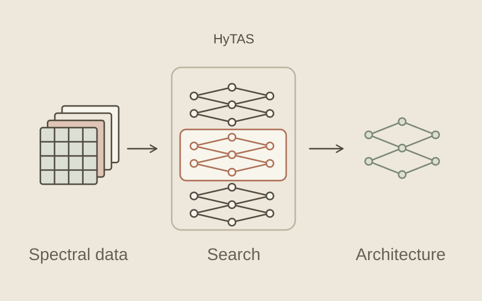
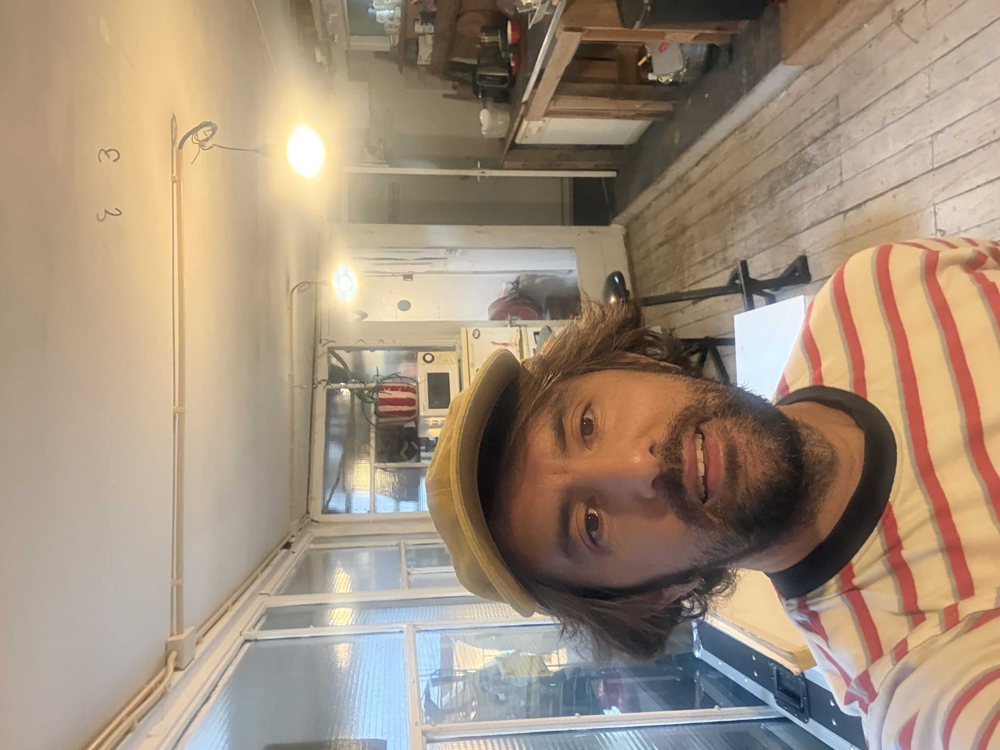
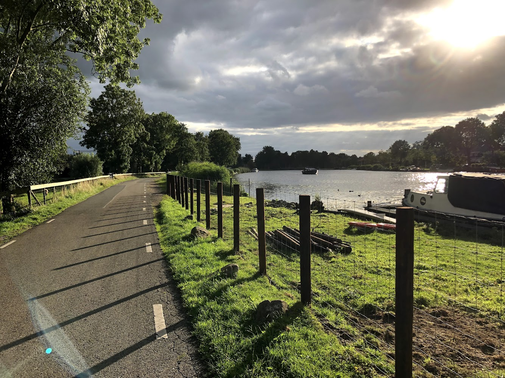
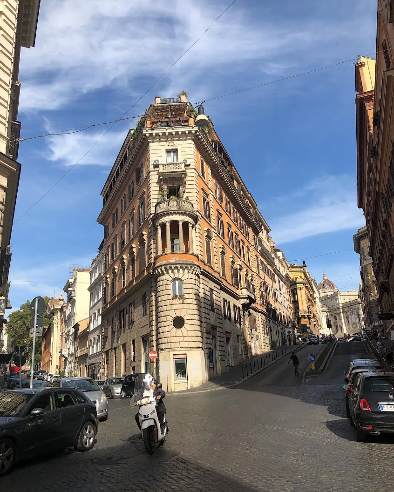

Mert Kilickaya
I am an AI researcher. My goal is to help automate vision. Can we build models that curate their own data, extract their own supervision, and adapt on the fly to changes in the real world?
I completed my PhD in computer vision at the University of Amsterdam’s Qualcomm Labs, supervised by Arnold Smeulders. Since then, I’ve been working in industry as a research engineer.
My work connects self-supervised visual representation learning, continual adaptation, and vision-language learning — from academic research to applied AI.
Currently a Senior Research Engineer at Greyparrot,
since October 2026.
Previously Agendia, TU Eindhoven, Qualcomm
Labs, and Huawei.

News
-
Our work at Agendia on AI-driven digital pathology for the 70-gene recurrence signature was presented at ESMO 2026, the most prestigious conference in Oncology.
-
I joined Greyparrot as a Senior Research Engineer.
Earlier news 2023–2024
-
October 2026 — present
Greyparrot
Senior Research Engineer · Industrial visual intelligence
-
2023 — October 2026
Agendia Amsterdam, Netherlands
ML Researcher · Biomarker Discovery
-
2022 — 2023
Eindhoven University of Technology Netherlands
ML Researcher · Continual Pretraining Agents
-
March 2021 — January 2022
Huawei Visual Search Lab Helsinki, Finland
Research Intern · Multimodal Learning
-
2017 — 2022
Qualcomm Labs, University of Amsterdam Netherlands
PhD Researcher · Deep Learning for Vision
At Qualcomm Labs, supervised by Arnold Smeulders.
Research
I want visual models to take a more active role in their own learning: choosing useful data, learning from new observations, and adapting efficiently as conditions change. This goal connects my work in self-supervised, continual, and vision-language learning with applications from medical diagnostics to industrial visual intelligence.
Patents
Visual Image Search via Conversational Interaction (Huawei)
Network for Interacted Object Localization (Qualcomm)
Subject-Object Interaction Recognition Model (Qualcomm)
Context-driven Learning of Human-object Interactions (Qualcomm)
People & Mentorship
Research is a shared endeavour. I’m fortunate to have worked with and supervised these thoughtful people.
Fangqin Zhou (PhD, TU/e)
Tommie Kerssies (MSc, TU/e)
Beyond Research
Away from research, I make visual memories. A few places, small observations, and moments worth keeping.

